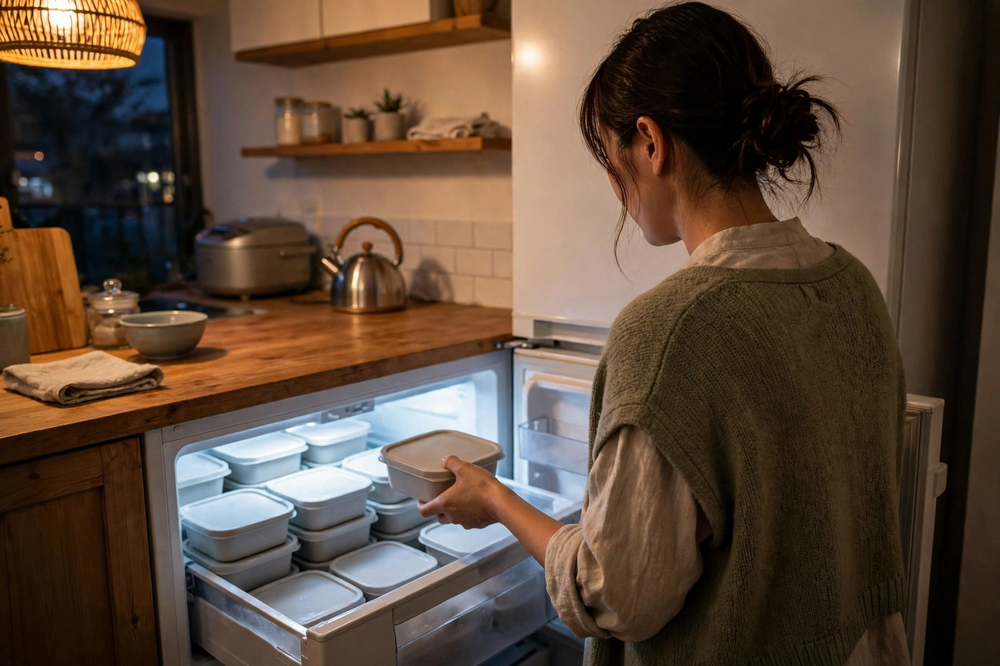

宅食・ミールキット・食材宅配を、送料込みの1食単価と「考えなくて済む回数」と冷凍庫の容量で記録するサイトです。
味の順位は付けません。公式の料金と仕様を、同じ物差しで並べ直します。
冷凍弁当の通常価格の実測幅です。送料は1食あたり最大で約200円の差になるため、本体価格ではなく送料込みで記録します。
「今日は何にするか」を考える回数が、サービスを使うと週に何回減るか。時短の中身は作業時間より、この回数だと考えています。
同じ10食でも、容器の高さで必要な容量は2倍以上変わります。冷凍室の容量から入る食数を先に計算できます。
2026年11月26日記録分（確認日：2026年11月26日、出典は各サービス公式サイト）。記録は毎月7日に積み重ねます。
| サービス | 通常1食単価 | 送料の型 | 容器の高さ |
|---|---|---|---|
| ワタミの宅食ダイレクト（いつでも二菜） | 約360円〜 | クール便実費型 | 三菜で約2.6cm |
| 食のそよ風 | 522円 | 公式で未確認 | 公式で未確認 |
| nosh | 612〜719円 | クール便実費型 | 4.5cm |
| 三ツ星ファーム（7食コース） | 約926円 | クール便実費型 | 公式で未確認 |